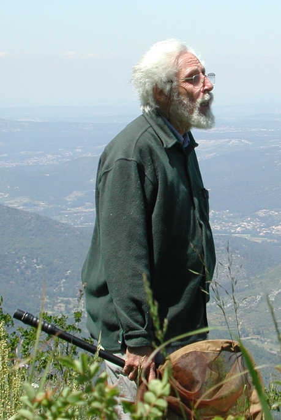

Henri Descimon is one of the world's experts on European butterflies. In recent years he has increasingly concentrated on Asian montane butterflies. 
Here he meets with Michael C. Singer in an unidentified coniferous woodland in the South of France. (Photo courtesy of Camille Parmesan and Mike Singer) |
 Henri Descimon, Sainte Baume, Département du Var, ca. 2003. (Photo courtesy of Gabriel Nève) |